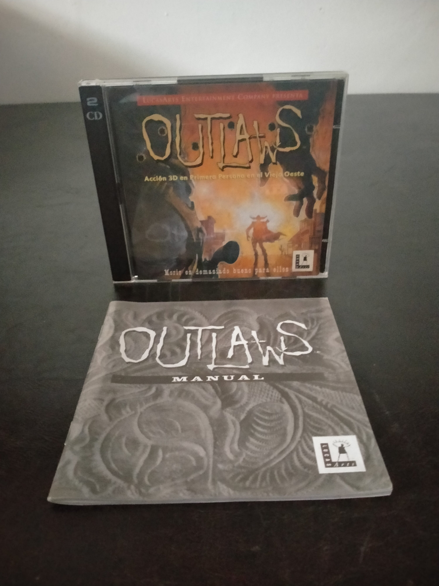

Ficha #000000
Outlaws
Outlaws es un shooter en primera persona ambientado en el Viejo Oeste, desarrollado y publicado por LucasArts en 1997. El jugador encarna al antiguo marshal James Anderson, que emprende una campaña de venganza contra una banda de forajidos tras el asesinato de su esposa y el secuestro de su hija. Utiliza una versión evolucionada del motor Jedi empleado anteriormente en Star Wars: Dark Forces, con escenarios tridimensionales, personajes y objetos representados mediante sprites y una estética inspirada en el western cinematográfico y la animación dibujada a mano. Destaca por su narrativa presentada mediante secuencias animadas, sus duelos, el uso de armas históricas y la banda sonora orquestal de Clint Bajakian, reproducida parcialmente como audio de CD. Esta edición española en formato jewel case se distribuye en dos CD-ROM e incluye manual localizado al castellano.
- Formato
- Jewel Case
- Plataforma
- Win95
- Género
- Shooter en primera persona Acción Western
- Serie
- Todos Jewel Case
- Desarrollador
- LucasArts Entertainment Company
- Distribuidor
- LucasArts Entertainment Company
- EAN
- —
Contenido de la edición
- Caja jewel case
- 2 CD-ROM
- Manual en castellano
Preservación
- Protección
- No determinado
- Formato recomendado
- BIN/CUE
- Jugable en virtualización
- Sí
Se recomienda preservar ambos CD-ROM mediante imágenes BIN/CUE para conservar correctamente las pistas de datos y el posible audio de CD asociado a la banda sonora. La ejecución virtual es viable mediante un entorno Windows 95/98 compatible, manteniendo montadas las imágenes cuando el juego solicite el disco correspondiente.